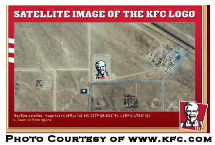
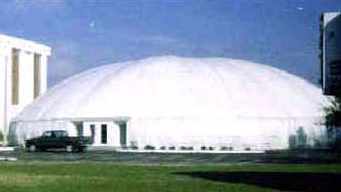

The Latest Headlines from
Cork Bowl 16
Teams and Date
Announced for Cork Bowl 16
August 19th – For just the second
time since in the past six years, Cork Bowl will be played in November this
year as the league announced a game date of Saturday, November 18th at a
weekend press conference. "We've had too many weather issues the past
few years to keep playing in December," remarked Commissioner Patrick
Cork. "Plus, this game was a November event for a long time and we
are trying hard to connect the past with the present."
The teams will be vastly different
this year than they have been in recent seasons. After three consecutive
seasons with similar rosters, a complete overhaul was made for the 16th
Cork Bowl. "We had to change things drastically," added Cork.
"Not that there were problems with what we had, but we have some major
player moves this year and thought the best way to welcome back some veterans
was to make some major roster changes." The two biggest changes this
year are the return of Steve Sanders and Jeff Henney. Sanders has been away
from the game since 2001 and Henney's last performance was in 2002. With
the additions of Sanders and Henney, the all-time quarterback role that
belonged to Tony Cork and Kirby Newell the past few years has been eliminated.
"Anytime you lose two veterans like Coach Cork and Kirby it's going
to be tough," commented veteran QB Willy Truitt. "But the league
has to do what it has to do."
Despite the loss of Tony Cork and
Newell, the rosters will remain at 6 apiece, giving both teams one substitute
for the first time in Cork Bowl history. The roster shake ups include splitting
up both the Truitt and Cork brothers - something not done since Cork
Bowl 7. The Corks had been together for seven consecutive Cork Bowls, and
the Truitts had been together for five straight. Willy Truitt will quarterback
an extremely talented group of receivers as he will have Jeff Henney, Chris
Cork, Brooks Wilson, Robert Trimble and Ryan Tomlinson on his squad. "You
see that group of targets and you have to be pleased," remarked Truitt
after the rosters were announced. "I don't remember having a better
core of wideouts in all my years of playing."
Some combination of Reggie Truitt
and Steve Sanders will call the signals for the opposing squad, who has
already announced their team name will be the Civets (a cat-like creature
blamed for the deadly outbreak of SARS in China). They will be joined by
Patrick Cork, Greg Howard, Jake Hoalt and Kevin Ryan. "You really don't
want your quarterback situation up in the air with just three monts until
game day, but that still leaves us plenty of time to work things out,"
remarked Reggie. "No matter which of us gets the call, the other one
will undoubtedly be a major factor at receiver."
Back to top
Cork Bowl
XVI: Civets vs. Binturongs (or Heart vs. Talent?)
Cork Bowl would like to
thank Willy Truitt for finding, and submitting, this story from the local
media
By: B.L. Tomato
Moonshine Daily Press
MOONSHINE, Ill. (Sept. 6, 2006) --
Anyone scanning this year's Cork Bowl rosters can surely pick out a few
familiar names. This year, the league has pulled out all the guns in an
effort to bring back fans lost following two uncompetitive games. This game
will feature eight Hall of Fame members, and two other players who have
three MVP awards between them.
The deck is stacked.
But, perhaps the most intriguing aspect
of this year's game lies beneath the skin of Cork Bowl lore. Anyone who
has followed this sport for any period of time knows the character of each
player.
As I sat there at the team announcement
press conference - I couldn't help but think, 'man this Binturongs team
is loaded with talent'. I wondered if we were looking another blow out in
the face. Then it struck me, while the Binturongs may have more talent,
the Civets are equally loaded with heart.
Patrick Cork and Reggie Truitt have
shown their determination to be the best for the past decade as they squared
off against each other every single year, elevating each others game. Now
they are teaming up. As are Greg Howard and Kevin Ryan. Neither is loaded
with natural talent, but they are warriors when they step onto the football
field. Steve Sanders may be the most well-rounded, explosive player on the
Civet roster, and the word on the street is the 'Colonel' is hungrier than
ever for a Cork Bowl ring.
Now the flip side.
The Binturongs represent straight
up five-tool talent. Starting with quarterback Willy Truitt, who is as cool
as the other side of the pillow when he walks out onto Corklestick Park.
His targets this year represent the best receiving corps in the 15-year
history of the league. Starting with No. 2 receiver all time, Chris Cork
and his 123-career receptions. Two-time MVP Jeff Henney returns with his
14-reception per game average, and Brooks Wilson teams up with Truitt for
a third year in a row. The Truitt-Brooks connection seems to be getting
stronger every year. If that is not enough, the Binturongs have the new
X-factor of Cork Bowl. Meet last year's MVP, Robert Trimble. Last year Truitt
showed a lot of trust going to the second-year player in clutch situations,
and Trimble responded.
All the pieces are there for a Cork
Bowl for the ages. For every time Truitt marches his Binturongs down the
field for a score, the Civets guarantee to match.
It's the Civets vs. Binturongs. One
has fire in their eyes, the latter has ice in their veins.
November 18, 2006. Mark your calendars.
Back to top
Chris Cork Compared
to T.O.
September 10th – "Now they
have to figure out how to deal with him." That seemingly harmless quote
from Patrick Cork opened up Pandora's Box this weekend at Cork Bowl camp.
Speaking on the departure of brother Chris Cork to the Binturongs, that
sentence from Patrick Cork led to the following tirade. "What do I
mean? What do you think I mean? Have you not followed him enough the past
8 years to know what I'm talking about? If the cameras and microphones aren't
on Chris, he'll do something to make sure they are. Whether it's doing sit-ups
in his driveway or faking injuries - you name it, he'll do it as long as
it means he'll get on TV. The guy had our locker room split down the middle
for almost an entire decade. You were either with him or against him - there
was no middle ground. And the word "team" was definitely not in
his vocabulary."
For years, it appeared the Brother
Cork tandem was a well-oiled machine. However, since Chris has parted ways
with Patrick, the reality has finally come to the surface. "There are
some people you simply have to put up with, and Chris was one of them,"
added Greg Howard. "You hate to throw around the phrase 'clubhouse
cancer', but I'm not sure what else you would call him. He'd rather get
into a catfight with Wilson than win a game."
When asked for his views on the saga,
for the first time in his life, Tony Cork responded only with, "No
comment." Not many are sure when Chris transformed from the cagey veteran
into the man Patrick claims him to be, but Patrick thinks it started years
ago - after Cork's best career performance in Cork Bowl 6. "After that
game he was suddenly the single-game record holder in receptions and he
let it go straight to his head. It's been building ever since. As his performance
has fallen off, his ego has only gotten bigger. Some people try to point
out his unselfishness in Cork Bowl 11 when he spent much of the game blocking,
but the real reason was he had a commercial to film three days later. He
told us the night before the game he didn't want to be too sore to do the
shoot, and asked if he could spend most of the game blocking instead of
catching passes. What do you say when one of your stars says that? It's
not like we could cut him and sign someone else in 12 hours. It was like
having a constant migraine for decade."
Back to top
Steve Sanders
Hungry for First Championship
September 24th – Despite his
immense popularity leaguewide, Steve Sanders still hates to see "0-2"
behind his name for his career record. "I've had some good individual
performances in the past, but we've never had a team come together enough
to win. I think that's going to change this year. When you look around and
see the leaders we have in Patrick and Reggie and then you add Greg to that
mix with his phenomenal career record in Cork Bowls, you have to expect
to win. I don't think we are the more talented team this year, but I have
no doubt that we are the better team - and that's a huge area of this game
that is often overlooked."
"We all know what Steve is capable
of," commented quarterback Reggie Truitt. "The guy is a gamer.
He deserves to pick up his first win this year and we have the right group
of guys around him to make that happen." Sanders will be back at receiver
after his 4-year layoff. His last game was a nightmarish day as quarterback
where he was pressured relentlessly and was picked off 6 times. The last
time he played receiver (Cork Bowl 10), Sanders was outstanding as he hauled
in 15 passes and scored three times. The only downside of his day was a
pair of costly fumbles. "My only regret so far is that I've turned
the ball over too many times. That has a lot to do with trying to do too
much. I don't expect to have to do that this year. We have so much veteran
presence on this team that we should all feel confident that our teammates
will step up and make plays. There's no need to force the issue and try
to do too much."
Sanders will join Patrick Cork, Greg
Howard, Kevin Ryan and Jake Hoalt as the targets for Reggie Truitt. "When
you look at the choices we have on offense, there's not going to be any
additional pressure on individuals - we can just go out and play the game.
I've gone through quite a bit the past few years and traveled a lot of miles
to get back in this game. I didn't go through all of that to come up short
again."
Back to top
Henney and
Chris Cork Feuding in Binturongs Camp
October 9th - With camp seemingly
cruising along for the Binturongs, a veteran and an up and coming star butted
heads this week. 15-year veteran Chris Cork and new teammate Jeff Henney
engaged in a heated exchange at Saturday's practice and had to be separated
by several teammates. ""I'm tired of Chris "T.O." Cork
expecting to be the number 1 option on game day," ripped Henney. "If
he gets half as many looks as Wilson and me, we are going to be in for a
long day. As far as I'm concerned, we can call him Chris "Collinsworth"
Cork."
The tension had apparently been brewing
under the radar for quite some time. "I think it goes back to when
Chris and Henney matched up in Henney's only two games," remarked quarterback
Willy Truitt. "Henney had been giving Chris a hard time about his self-proclaimed
domination over those two games and Chris finally had enough. Hopefully
this is out of the way now and we can focus on football. We only have six
weeks to pull this together."
"I don't need to defend my character
from players that have only played in two career games," added Chris
Cork. "Nobody takes Tomlinson seriously and he's been around a lot
longer than Henney has. Next thing you know we'll see headlines from Josh
Helton and Justin Massey. It's not even worth responding to."
Back to top
Jake Hoalt
Beefs Up on Howard's Training Plan
October 14th - One-time cameraman
Jake Hoalt's long journey to the Cork Bowl field of play has taken yet another
turn. After 2 1/2 games under his belt, Hoalt decided the only way to truly
make an impact was to follow in the footsteps of another slight-statured
veteran. Hoalt spent the entire offseason under the careful guidance of
two-time MVP Greg Howard preparing his body for the game. "It was an
all-natural training regimen," commented Hoalt. "And by all-natural,
I mean all of the supplements and pills I took were shipped in from Mexico
and other Central American countries."
"I'm really proud of how far
Jake has come," added Howard. "It took a while to convince the
only true way to Cork Bowl greatness was through hard work and a couple
supplements to help get you going, but he finally came around and let me
teach him everything I know." Howard made a giant leap after a couple
of seasons getting his feet wet, and his Civets teammates hope this is the
year Hoalt makes that leap as well. "He's shown some good flashes in
the past couple of years, especially on the defensive side of the ball,"
replied Patrick Cork. "He has more confidence in his abilities and
is beginning to realize he belongs out there with the rest of the veterans.
Plus, now that he's packed on 20 pounds of 'all-natural' muscle, it gives
us yet another intimidating presence in the secondary. Between Jake and
Greg, we may have a couple Binturongs snapped in half before the game is
over."
Back to top
Willy Truitt
Not Fazed by High Expectations
INDIANAPOLIS (Oct. 24, 2006) -- Cork
Bowl veteran Willy Truitt has been keeping a close eye on CB fan sites,
blogs, and message boards, and he has noticed one thing: everyone expects
the Binturongs to win.
One could expect that kind of pressure
to take its toll on the No. 1 ranked passer in CB history, but Truitt maintains
it's all part of the game. "Everything in this sport is pressure packed,
and I've won some big games that we weren't supposed to win, and I've certainly
marched out there and won the games I was supposed to," he says from
the Hugh Hefner suite at The Palms Resort and Hotel in Las Vegas.
"There was a lot of pressure
on the Bushdog and Weasel teams, having Pat Cork in his prime, as well as
Chris Cork, and trying to maintain the heritage of the Cork name,"
he reflects.
"But, when you step out onto
that field - there is just something special about it - and you forget about
all that stuff, and just play the game."
That is what Truitt will focus on
this year, playing the game that has made him a household name all across
Crawford County for the past decade.
"It's pretty easy really,"
smiles Truitt. "I have a lot of great tools this year, and all I have
to do is stay within my game, and give these guys the best shot at displaying
their talents.
"I have three guys that could
easily be the MVP of this game, and that is exciting. The competition that
we have had in practice is amazing, and they are just
motivating each other. It's rather refreshing as a veteran to see that type
of chemistry with so many big-name players.
"Chris even has that crazy look
in his eye again, and if we can get RT in the mix, then it is going to be
a fun day for us."
With brother Reggie leading the Civets
at QB, Willy is focusing more on defense than in seasons past. "There
is no better feeling than picking off your brother,
and Reg is definitely an interception machine, so I look forward to catching
a few of his passes," laughs the younger NL Truitt pup.
Back to top
Michigan/Ohio
State Game Bumped by Cork Bowl
November 4 - For the first time in
recent memory, the world famous Michigan/Ohio State game will be played
in the late afternoon at 4:30 due to Cork Bowl 16 being scheduled for the
morning of the big rivalry game. "As long as I remember, the Michigan/Ohio
State game has been played at noon Eastern time," recalled Commissioner
Patrick Cork. "I remember a handful of years where we were playing
Cork Bowl on the same day, and it was at the same time every year. However,
our game has gotten so big that the Big Ten moved the game into the late
afternoon because they were concerned about not getting the ratings they
were hoping for. At least that's what they told me."
The Big Ten was not pleased to find
out Cork Bowl was scheduled the same day of the #1 vs. #2 heavyweight battle
and put pressure on the league office to either change the date or change
the time, but Cork Bowl refused. "We don't get pushed around by anyone,
not even the Big Ten Conference," added Cork. "They were on us
hard to get our date changed, but our TV contract was in place. We couldn't
push our game time back because we don't have lights and they do."
Big Ten Commissioner Jim Delany was
told by ABC to move the game due to a ratings war with Cork Bowl. "They
knew they were going to lose a huge percentage of their audience if they
didn't move their game to a later time," added Cork. "Let's face
it, if people have the choice of watching the #1 and #2 teams playing for
a shot at the National Championship or the single greatest, most competitive
sporting event in the country, what do you think people are going to watch?"
Back to top
Jay Jared to Call
His Third Cork Bowl
November 8 - After missing last year's
contest to serve as a guest announcer for a Green Bay Packers game, Jay
Jared will return to announce Cork Bowl for the second time in the past
three years and his third overall. "We are excited to have Jay back,"
announced Commissioner Patrick Cork. "He brings a sense of professionalism
that this game demands."
Cork is also anxious for Jared to
get back into the booth again as well. Jared's first experience, in Cork
Bowl 8, was a thrilling 142-126 contest and his last work came two years
ago in Cork Bowl 14 - another close game 133-112. One thing in common in
both games Jared has announced was the MVP - Patrick Cork. "Honestly,
after we lost last year I thought I had to bring back my good luck charm
and ask Jay to announce again," added Cork. "When you're the commissioner
you can do things like that." Cork won the MVP both years Jared has
announced combining to catch 45 passes for 11 touchdowns in the two games.
"Cork Bowl brings everything
that's great about sports into one game," remarked Jared. "The
intensity, passion and unparalleled enthusiasm keeps you coming back every
year. These guys play this game the way it was meant to be played and you
have to respect that."
Jared will be joined by long-time
announcer and player Tony Cork. Cork quarterbacked both winning teams in
Jared's other two announcing experiences, and now he'll join him in the
booth. "I'm going to miss being on the field, but I'm not going to
miss my fingers freezing," added Cork. "We should have ourselves
a great game this year, but I know neither quarterback will play as well
as the Old Coach can." Evan Woodard will join Cork and Jared behind
the camera for the third straight year as well. "Really, all I'm hoping
for is a warm day and a lot of food," responded Woodard.
Back to top
Cork Bowl Celebrates
the 10th Anniversary of the Shootout of '96
November 11 - November 16th will mark
the 10th anniversary of one of the wildest games in Cork Bowl history. In
Cork Bowl 6, the teams combined for a single-game record 315 points in the
Muskrats' 168-147 victory. The 147 points from the losing team is actually
more points than any other team has scored in Corl Bowl history except for
the Rovers in Cork Bowl 7 who scored 149. "It was a crazy, crazy game,"
recalled Willy Truitt. "That was my first game at quarterback and I
played the entire first half until they started blitzing every play and
then I moved to receiver. It was an absolute scorefest. If I recall, basically
everyone threw a pass at some point that day."
Truitt was almost right. Seven different
players tried their hand at quarterback led by Reggie Truitt's then-record
39-for-76, 15 TD performance. The Muskrats were incredibly efficient on
offense en route to scoring a record 23 offensive touchdowns. Willy Truitt,
Chad Veenstra and Patrick Cork combined to complete 47 of 78 passes for
an amazing 22 touchdowns. "It calculates out to basically every other
completed pass was a touchdown," added Cork. "It was absolutely
incredible." Leading the offensive charge was Patrick Cork with 17
catches and 5 touchdowns. The rest of the team all scored on more than half
their catches, including Kirby Newell's MVP performance where he finished
with 15 catches and 7 touchdowns. Chris Cork set a then single-game record
with 22 catches and Justin Burtch scored 8 touchdowns on 15 receptions.
For the few years after Cork Bowl
6, the scoring record was approached, but was never really threatened. "I
honestly don't think we'll ever come close to putting up 168 points in a
game again," predicted veteran receiver Chris Cork. "The game
has changed a lot since then in a number of ways. There were no huddles
back then for starters. We lined up and went with no-huddle offenses 95%
of the time. Guys were younger and faster and the game was much more vertical.
We didn't care if we turned the ball over throwing deep because we knew
we could come right back and get a score the next time we had the ball.
It's really turned into a possession style game in recent years and teams
are a lot more conservative in their game plans. It appears to be one of
those unbreakable records."
Back to top
Colonel Sanders
Embarks on Ad Campaign
November 14 - The Binturongs' confidence
is soaring as they believe the Civets, in particular Steve "Colonel"
Sanders, are getting  distracted
in the days leading up to Cork Bowl 16. Kentucky Fried Chicken recently
released its new "Face from Space" ad campaign with a giant 87,500
square foot Colonel Sanders logo that is supposed to be visible from outer
space (click
here for more details).
"I don't know what all the fuss
is about," beemed a proud Sanders. "They wanted my likeness visible
to aliens in outer space and I gladly obliged. It's no worse than doing
a video like the Super Bowl Shuffle like the '85 Bears did and we all know
that didn't distract them." The Binturongs, on the other hand, see
this development as an obvious distraction. "While our team is making
final preparations on our pass coverage packages and offensive sets, one
of their best players is in Nevada getting an enormous picture of himself
pieced together in a desert so it can be seen from outer space," remarked
Binturongs veteran receiver Chris Cork. "Yeah, I don't see any problem
with that at all..."
"At this point in the game there
is no magic workout or special practice you can go through to get you any
more prepared than you already are," added Sanders. "We've spent
the past three months preparing for this game. It's going to take a lot
more than a giant face in the desert to distract our team." The rest
of the Civets were unavailable for comment.
Back to top
Dome Sweet Dome?
November 16 - For the second-straight
year, Cork Bowl is facing poor weather conditions entering their biggest
weekend of the year. It has some experts questioning whether it is time
for Corklestick Park to go dome. The experts cite lack-luster attendance
and poor  play as the
main factors for the switch. "Last year's game, while as entertaining
as it was on TV, I know for a fact that the league took a hit at the gate,"
says Moonshine reporter B.L. Tomato. "My sources indicate that not
only is the league thinking about it, they are deep into conversations with
several manufacturers."
While Cork Bowl commissioner Patrick
Cork could neither confirm nor deny the story, he did offer his opinion.
"It's obvious we are looking for ways to improve the field for rough
weather like we've had recently, but I can't say anything more than that."
Several veteran players were contacted
and their opinions varied greatly on the subject:
Reggie Truitt: "I'd hate to see
it, heck it's the only way we have a chance this year. Willy would pick
our defense apart if he had perfect conditions."
Greg Howard: "While it would
be nice because I could wear really short and tight Under Armour spandex
to show off my physique, it's not really my style. I like it sloppy and
raw."
Ryan Tomlinson: "Are we talking
about a beer tent?"
Willy Truitt: "No way, it would
make us weak like the Colts of Indianapolis."
Chris Cork: "Let's do it, and
if someone could run my routes for me too, I'm up for anything."
Back to top
Back
to Cork Bowl |